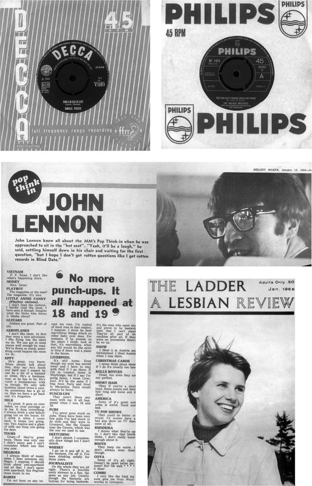
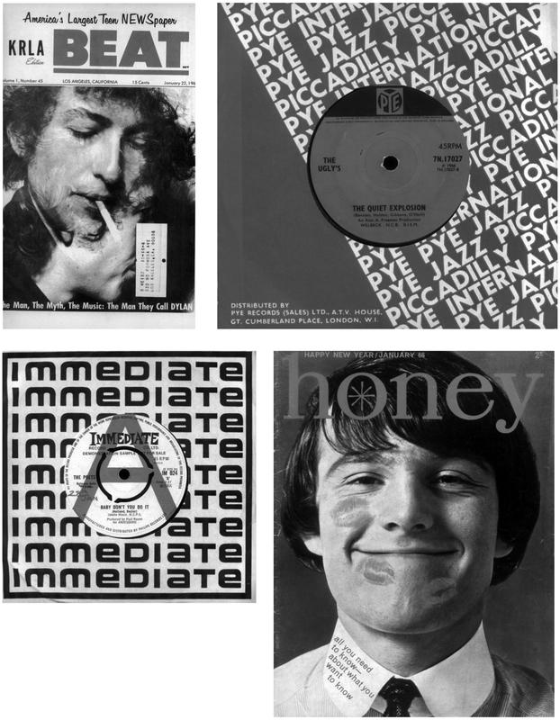

A Quiet Explosion: CND, Protest and the Conspiracy of Silence


‘“THE SOUND OF SILENCE”: “Take my arms that I may reach you” across the silence that divides the heart, the neon that burns cold and stabs the night and “formulates on the end of a pin” all that lives in its light and shadow.’
JUDITH PIEPE, sleeve notes for The Paul Simon Songbook, 1965
1966 was a year of noise and tumult, of brightly coloured patterns clashing with black and white politics, of furious forward motion and an outraged, awakening reaction. There was a sense that anything was possible to those who dared, a willingness to strive towards the seemingly unattainable. There remains an overwhelming urgency that marks the music and movies of that year, counter-balanced by traces of loss, disconnection and deep melancholy.
But underneath all the sound and fury – and the moments of regret – lies a profound silence. This is not the silence of peace, of solitude, of sought withdrawal – or even meditation, although all of these states would be examined during that year. It’s not a silence that exists within itself; it is a rupture, a prelude to something that is barely conceivable. This silence is an artificially created vacuum – a few instants of bone-shaking terror – that turns the world inside out.
You can hear traces of that silence throughout the year, among the many thousands of records released by a rapidly expanding music industry. Pop was everything in 1966. It wasn’t just the lifeblood of youth culture, it was a way of looking at the world and, as such, it couldn’t help but express the thoughts, feeling and values of a generation that was beginning to test its social, political and perceptual power. But for the young, born in the 1940s and early 1950s, there were nightmares in their heads that they couldn’t shake off.
The year’s first US #1 was Simon & Garfunkel’s ‘The Sound of Silence’. The record had both a paradoxical title and a convoluted history. It had already been released in two acoustic versions – on the 1964 Simon & Garfunkel LP Wednesday Morning, 3 A.M. and Paul Simon’s 1965 solo album – before this autumn 1965 single release. It was produced by Tom Wilson, who had presided over Bob Dylan’s unprecedented smash ‘Like a Rolling Stone’. After being ousted as Dylan’s producer, he took the same electric instrumentation and overdubbed it onto the acoustic original.
The impulse might have been opportunist but the song was highly effective, with its memorable opening line – ‘Hello darkness, my old friend, I’ve come to talk to you again’ – and its explicit address to the lost, the marginal and the desperate. Taking over the top slot from the Beatles’ ‘We Can Work It Out’, it seemed to herald a year in which the mass market would not be afraid of depth, in which the bizarre and the as yet unheralded would become commonplace.
‘The Sound of Silence’ also introduced the year’s secret stillness. Throughout 1966 there would be sudden, fleeting lacunae within the unstoppable momentum of songs like the Who’s ‘Substitute’ or the Beatles’ ‘Rain’. Time accelerated, stopped and began to loop. There would also emerge a strange stasis – the death drive inherent in repetition – within the sudden fashion for monochordal Eastern tones. These were harsh mutations, forged under extreme pressure.
It wasn’t just about dropping all the instruments out to create excitement. It was the sense of impending catastrophe that arrived at the end of the second single by Love, a mixed-race group who were, for a few seasons, the toast of Los Angeles’ Sunset Strip. ‘7 And 7 Is’ may well be the most extreme record ever to hit the US Top 40: an incandescent burst of reverb guitar, galloping drums and bizarre lyrics that ended with a loud, rumbling explosion – the period’s atomic terror made manifest.
However, the most accurate enacting of that silence would appear not on record, but on the screen. Filmed the previous year, Peter Watkins’s The War Game was shown in a small number of cinemas and art houses throughout 1966. Commissioned by the BBC, it was suppressed on completion because it told a terrifying and unpalatable truth. Despite the best efforts of the Establishment, it became a kind of celluloid samizdat, exhibited as a matter of faith and protest.
The silence comes around a third of the way through the film. The previous fifteen minutes have shown matters escalating: triggered by a flashpoint in Berlin, the Third World War between East and West is depicted by an onslaught of facts, figures and a rising panic signalled by the constant sound of sirens. It’s only milliseconds, but suddenly the film’s momentum ceases. The screen fills with white, and then the image turns negative; all you hear is the scuffling of limbs and the whimpering of humans in distress.
This silence is the sound of life being sucked out of the world. It does not last, as the dispassionate voiceover returns: ‘At this distance, the heat is enough to cause melting of the eyeball, third-degree burning of the skin and ignition of furniture.’ It dissolves into the noise of screaming, but the voiceover soon continues – ‘Twelve seconds later, the shock front arrives’ – and then you hear the deep roar of mass destruction as the camera shakes and the terraced house begins to dissolve.
So this is the lacuna at the heart of this extraordinary year: the sound of nuclear explosion. For the previous twenty-one years, ever since the hecatombs of Hiroshima and Nagasaki, it had invaded the consciousness of the world. The effects were fundamental and, as yet, ill understood, but they poisoned everything. Even so, there were those who continued to think in the old way: the Cold War, the arms race, Mutually Assured Destruction. They were in charge of the weapons, and they clung to the certainties of 1945.
The Second World War ushered in an age of mass consumerism. But, just as the sixties began to unpick the buried doubts of the previous decade, so did the psychic cost of permanent conflict begin to surface with great force in 1965 and 1966. The teenager had been conceived at the Second World War’s end, an American invention that spread, with the victor’s culture, throughout a shattered Europe. But teenagers had to bear a deeply embedded, barely acknowledged psychic weight.
They were the first generation in history to have grown up in this insane world of A- and H-bombs. They had had to face a potentially blasted future from the very beginning. Pop was their culture, and the huge amounts of money flowing into the music industry engendered a confidence that propelled many ever further and deeper, as they began to explore this and other fears. From 1965 on, pop culture offered, as the pioneering critic Paul Williams observed, ‘a huge new playground to create and communicate and be perverse in’.
There was also a subtle maths at work in 1966, two-thirds of the way through the twentieth century. The First World War had ended in 1918 and the Second began in 1939. Twenty-one years. The Second World War ended in 1945, so, if history was going to repeat itself – and many wilfully refused to understand its lessons – the next conflict, the Third World War, would begin in 1966. The pressures for another conflict were ever-present and, confronted with this situation, many teenagers decided to act as though life and death itself was at stake.
* * *
‘At the end of a four minute count-down the lights went out and a false ceiling made of paper came down on people’s heads, to the most deafening noise we could devise. The cloakroom girls screamed and hid under the counter. In the darkness and confusion, strange mutant figures moved.’
ADRIAN HENRI, describing ‘Bomb Event’, a Happening held at the Cavern Club in Liverpool during 1964
A seven-inch 45 rpm record, copyright 1966, with a generic company bag and a deep pink label. It’s on Pye Records, one of the four majors that dominated the British music industry in the mid-sixties. At the beginning of 1966, Pye had a couple of major groups, the Kinks and the Searchers, and an excellent roster of US licensees, but it lagged behind EMI and Decca and was notorious for its unsympathetic handling of artists and contracts that were poor even by the day’s shabby standards. From the very beginning, the record stood little chance.
Run by the formidable show-business veteran Louis Benjamin, Pye had had enormous success in the late 1950s with the King of Skiffle, Lonnie Donegan. In the early 1960s, it licensed a good deal of American blues and R&B, before investing heavily in the nationwide pool of talent that emerged in the wake of the Beatles’ 1963 breakthrough. Like all the others, Pye’s A&R approach was scattershot: sign acts on the cheap and see which one sticks.
The Ugly’s were one such group, from Birmingham – very much the third city, after Liverpool and Manchester, in the methodical raiding of the provinces’ pool of young talent. They had come together in the late 1950s, during the skiffle boom that gave so many young musicians their first chance to play in public. After changing their name from the Dominettes, the Ugly’s played a major part in their city’s thriving beat scene, as well as enduring the then obligatory ritual of playing the German clubs.
In such a crowded market, the Ugly’s tried to distinguish themselves with their rather perverse name and socially conscious material. ‘All of us were socially aware,’ says lead singer Steve Gibbons. ‘We were striving to be different to the other groups. They’d play American pop, R&B, a bit of Tamla, but we’d have quirky things, coming from within ourselves. The urge came from the Beatles: they’d shown the way. You had to write your own material. That was an essential part of the band’s make-up.’
Signed in early 1965, the Ugly’s first single was released in June. ‘Wake Up My Mind’ was an assured Dylan-esque number that protested the rising tide of conformity. Their second record, ‘It’s Alright’, had thoughtful lyrics and an unusual, harpsichord-driven arrangement. Like the first, it went nowhere in the British charts, despite heavy play on the pirate radio stations and an appearance on Ready Steady Go!. For the A-side of the group’s third 45, the label chose ‘A Good Idea’ – a bitty dirge that failed to live up to its title.
The flip side was something quite different. ‘A Quiet Explosion’ begins with the reedy, eerie sound of a Vox Continental organ. It then adds a subtle rolling drum pattern underpinned by a strange, echoing riff reminiscent of the musique concrète electronics pioneered by Delia Derbyshire on 1964’s ‘Dr Who Theme’. ‘That was our bassist John Hustwayte,’ says Gibbons. ‘He played that riff with a plectrum and our producer, Alan A. Freeman, put echo on it. The falling bass run at the end, well, that’s the falling bomb.’
Complementing a sound picture that is sombre and futuristic, even slightly sinister, the lyrics are foregrounded. Principally written by drummer Jim Holden and persuasively sung by Gibbons, they attempt to grapple with serious themes in the spirit of late 1965, a time of caustic comment and pop protest. They touch on world hunger, the nature of peace in a seemingly permanent Cold War and, indeed, the lunacies of MAD: ‘The quiet explosion / Bomb’s about to fall.’
‘I remember recording it very well,’ says Gibbons. ‘It was an adventure just to get into the studio. I really like the way that I sing it: my vocals weren’t always right but that was a good song. And it’s what we felt. All the band were obviously aware of the futility of any war. I was born during the war, and I remember the bomb sites as a kid. In Birmingham there were bomb sites everywhere. I had uncles in my family who had been killed. And they were still playing at it – with the Cold War.
‘At school we had a great maths teacher. He’d been in Bomber Command and it was easy to get him talking. He was obviously Labour through and through. He never talked about the war – which I’d love to have talked to him about – but he talked about McCarthyism, that witch-hunt, and what the future would be like. The war had a massive impact on my generation because of the way it shaped everything. All of that had a bearing on me as a musician.’
Gibbons also witnessed the exercising of a social conscience within his family, prompted by the period’s leading Christian evangelist: ‘I have a brother, six years older than me, who became a conscientious objector. He went to see Billy Graham in the late 1950s. When the call-up came for national service, he refused to go. He had to face a tribunal, and it was on the front page of the Birmingham Mail for everyone to see. My mother was furious, but I was proud of him: what a great thing to do.’
Like many sixties teenagers, Gibbons would be liberated by the ending of national service: the cut-off age for the last entry was 1 September 1939, and he was born in mid-July 1941. He didn’t see it that way at the time, though: ‘I just missed conscription, but if I’d been called up, I’d have gone like a shot. It was the travel. I know it’s selfish. I’d see guys come back from their national service in Aden, Cyprus, and they’d have suntans and tattoos, they were full of stories. They were men. I did the next best thing and formed a band.’
‘A Good Idea’ was released on 21 January 1966, one of several Pye singles that week. It got a down-page review in the following day’s Record Mirror: ‘Strong lead voice on this beater – good idea, lyrically, too. Nice sense of rhythm and fair commercial appeal.’ Summarised in two words – ‘good flip’ – ‘A Quiet Explosion’ quickly disappeared along with its A-side, one of the many barely heard songs in a period of massive, heedless overproduction.
Yet it remains a strange, haunting record. It’s not a total success – the lyrics are on occasion garbled – but in its very awkwardness it has the ring of authenticity. It has the sense of thoughtful young men groping towards some understanding of the world in which they live and their place within it: ‘but we must unite and all fight with one cause’. It may not be truly psychedelic, but it pushes forward towards that definition: in its experimental fusion of sound, mood and sense, it is imaginative and holistic.
The effectiveness of the song hinges on the word ‘quiet’. The sound of war is usually thought of as a monstrous assault on the senses: the constant, whining sirens, the pulverising noise of bombs and shells. But this is describing another, new kind of deadly conflict. It’s quiet, if not silent, insinuating. You won’t know it’s there until it’s too late. ‘Silence like a cancer grows’: like all of their cohort, the members of the Ugly’s had grown up with atomic warfare as a fact of life.
The bomb had become integrally woven into Western life. Life could be good in the new Mass Age, but there was a conspiracy of silence at the heart of government about the true nature of nuclear deterrence and the doctrine of Mutually Assured Destruction: the brake put on the use of nuclear weapons through the sure knowledge that their use would result in Armageddon. Everyone knew that the bomb was there, but it was not talked about. The alarms of the 1950s were, by 1966, calming into a dull ache.
In his polemical survey of post-war youth, Bomb Culture, Jeff Nuttall marks Hiroshima and Nagasaki as the moment when everything changed: ‘In the new world, the light was harsh, a perpetual noon of decisions, every action crucial. No man was certain any more of anything but his own volition so the only value was pragmatic. Moral values, thought absolute, were now seen to be comparative, for all social entities around which morality had revolved were now called into doubt and nothing of morality remained.’
Nuttall sees 1945 as the moment when ‘the generations became divided in a very crucial way’. While the pre-bomb generation attempted to continue as normal, ‘the people who had not yet reached puberty at the time of the bomb were incapable of conceiving of life with a future. They might not have had any direct preoccupation with the bomb. That depended on their sophistication. But they never knew a sense of future.’ Trying to find a way through that impasse would become a major preoccupation in the years that followed.
This generation gap played out in the first musical responses to the nuclear world. The earliest atomic songs were gung-ho, regarding the bomb as a God-given agent of American power, but Sam Hinton’s ‘Old Man Atom’ in 1950 was a witty talking blues (‘all men may be cremated equal’) that ended with an explicit call to action: ‘The people of this world must pick out a thesis / “Peace in the world, or the world in pieces!”’ ‘Old Man Atom’ was not inflammatory, simply critical, but – in the anti-communist hysteria of the early 1950s – it was banned.
A climate of censorship and denial cloaked the acceleration of the arms race during the 1950s. As more states joined the nuclear ‘club’, in particular France and Britain, there was a massive spike in hydrogen-bomb tests: around thirty-five in 1956, around fifty-five in 1957 and over a hundred in 1958. By that time, those who had not reached puberty in 1945 were beginning to come into their late teens and, unlike the previous generation, they were going to do something about the perilous world in which they found themselves. It was time for a thesis.
The Campaign for Nuclear Disarmament was launched at a public meeting on 17 February 1958, when 5,000 people filled a hastily booked hall in the centre of London to hear speakers like Bertrand Russell, the radical Labour politician Michael Foot and the historian A. J. P. Taylor. ‘The size of the response had its effect on the speakers,’ Peggy Duff noted in her autobiography, Left Left Left; ‘one and all came out with a militant denunciation of nuclear weapons, and Britain’s in particular.’
Born in 1910, Duff was a journalist and an experienced activist. Indomitable and, despite an air of chaos, a ferocious organiser, she became the organising secretary of the new movement, its unwieldy name abbreviated to CND. The first show of strength occurred a few weeks after the launch, with the march from Trafalgar Square to the Atomic Weapons Research Establishment at Aldermaston, just over fifty miles from the capital. The march took four days and was attended by 10,000 people at the finale.
It set the tone for years to come. CND was a broad church. As Duff remembered, it included ‘Members of Parliament, professors and students, teachers and schoolchildren, librarians and nurses, actors and printers, entomologists and engineers, philosophers and plumbers, doctors and draughtsmen, firemen and farmers, every possible profession and trade. It was a community, but it was a community for which no vows were required. All you had to do to belong was to step off the pavement and join it.’
CND’s inclusiveness was embodied by the logo designed for the first Aldermaston march. Charged with the task of promoting the movement, Gerald Holton began with the British naval semaphore signals for the letters ‘N’ and ‘D’, standing for ‘nuclear disarmament’. He placed these within a circle, ending up with a cross that had its horizontal arms pointing downwards at 45 degrees, strong white against a background of black. The peace sign gave CND a potent and instantly identifiable brand.
CND was ‘absolutist and compulsive’, as Peggy Duff wrote. ‘It wanted to get rid of nuclear weapons, all of them. It wanted to do it very quickly.’ As such it crossed traditional party lines: radical pacifists marched alongside Labour Party members, communists with anarchists. After the Aldermaston march turned into an annual event and anti-nuclear marches began nationwide, CND became a non-commercial, nationwide bohemian youth culture that crossed geographical and class lines.
The flavour of these times is captured by Pat Arrowsmith’s novel Jericho, which is situated at a late-1950s/early-1960s peace camp. Among the cast is an ascetic organiser with a martyr complex, a pacifist gay man, a young tearaway, a middle-aged Quaker, a young female student and a forty-year-old agent provocateur. Picketing a nuclear establishment, the protestors succeed in bringing the workers out on strike, but that is only a small victory, as they half expect at ‘any moment to be blinded by the first dazzling bomb flash’.
That sense of extreme urgency – that it all might already be too late – gave the movement massive momentum. During the late fifties, a number of films and books examined the possibility of nuclear destruction: Nevil Shute’s On the Beach (1957) and its relentlessly apocalyptic film adaptation by Stanley Kramer (1959); Helen Clarkson’s The Last Day (1959); and Alain Resnais’s ground-breaking nouvelle vague document Hiroshima Mon Amour (1959).
Apart from a few isolated instances – the most famous anti-nuclear song of that period was Tom Lehrer’s satirical ‘We’ll All Go Together When We Go’ – the mainstream music industry did not address the topic, but music was vitally important to the Aldermaston marches and CND events in general. It was the era of folk, skiffle and trad jazz, music that could easily be played without amplification and was within the grassroots, non-commercial tradition of the Left. The first CND anthem was written for the 1958 Aldermaston march. The science-fiction writer and skiffle enthusiast John Brunner adapted an old gospel hymn with new lyrics: ‘Don’t you hear the H-bomb’s thunder / Echo like the crack of doom?’ At the same time, Ken Colyer’s Omega Brass Band gave the gathering a musical focus. Dressed up in a British approximation of a New Orleans funeral band, they lifted spirits with their rousing rags and marches.
In March to Aldermaston, the short film produced by Lindsay Anderson and Karel Reisz, among others, trad jazz bands – including the Omega Brass Brand – predominate. A photograph from the Jeff Nuttall archive captures the moment: a motley crew of strangely dressed characters playing trumpets, cornets and clarinets in front of a drummer, dressed in a kilt and bashing a snare. It’s a ragged bohemianism, unlike anything else at the time.
The musicians included Dougie and Tony Grey from the Alberts, as well as Jeff Nuttall. A constant presence during these years, the Alberts would be extremely influential, even though they have left little recorded trace. They were quintessentially British: an art-school, Goon Show fusion of trad with surrealism, kinetic art and borderline lunacy. The Grey brothers, according to Nuttall, ‘owned an extensive collection of Edwardian clothes and redundant wind instruments, all of which they could play with disarming skill’.
The Alberts twisted the guts of trad’s New Orleans revivalism into a truly absurd, anarchic stage act, with an edge of deliberate provocation. They were joined by proto-performance artist and sculptor Bruce Lacey, who, Nuttall recorded, ‘made his magnificent hominoids, sick, urinating, stuttering machines constructed of the debris of the century, always with pointed socialist/pacifist overtones but with a profound sense of anger, disgust and gaiety that goes far beyond any political standpoint’.
This was a sick response to a sick world. As the Aldermaston marches grew bigger – 20,000 in 1959, 100,000 in 1960 – this renegade element became highly visible. As Nuttall later wrote, ‘The Colyer fans, by now dubbed beatniks, appeared from nowhere in their grime and tatters, with their slogan daubed crazy hats and streaming filthy hair, hammering their banjos, strumming aggressively on their guitars, blowing their antiquated cornets and sousaphones, capering in front of the march.’
Rather than mainstream pop, which was still stuck in a purely romantic mode, this combination of music, clothes and politics became the first widespread movement in Britain to banish the straitjacket of 1950s culture. CND’s great strength, as the movement’s historian John Charlton writes, was that at a time when travel was still restricted, ‘it brought large numbers of Britain’s youth together: interacting with older people as well, they were exposed to a wide range of ideas, books, and music’.
Barry Miles became involved with the movement when he started at art college. ‘Cheltenham had a youth CND group, which was run by a guy called Nigel Young, sometimes known as Fred Young, who later became Professor Young and ran the Bradford Centre for Peace Studies. I met him because he was going out with one of the girls in my class at art college, who I then later went out with. Then he become the regional organiser for YCND, and he made me the Cheltenham representative. So I got involved with paperwork and distributing posters.
‘I remember the Cheltenham Literary Festival of 1961. Arnold Wesker was there, and Harold Pinter and John Berger, and they were all wearing CND badges. You would see this little badge wherever you went. Whoever it was, it was somebody you could relate to. No matter how straight they were or how old, you had something in common. It broke down barriers. I would never have dreamt, at the age of seventeen or whatever I was, approaching someone like Harold Pinter, yet one felt able to, because he was wearing the badge.’
On 17 September that year, there was a major disturbance in the heart of London when the police cordoned off Trafalgar Square before a planned CND meeting. Peggy Duff remembered that ‘in the square below there were many thousands. It was impossible to tell how many. And all around it there was a thick queue of people perambulating around, because the police would not permit anyone to stop. So round and round we went. There was a feeling around the square that day – a feeling of revolution, of real challenge.’
Captured by Granada Television in a stirring documentary, A Sunday in September, the Trafalgar Square protest ended in chaos: provoked by the sit-down tactics, the police started beating and kicking the protestors, eventually arresting 1,134 people. This was a watershed moment for the movement. Jeff Nuttall recalled drinking with a group of young CND members after the Trafalgar Square demo, ‘cynical, sophisticated’ teenagers who were becoming hardened. ‘They have sacrificed a lot, have come out of viral shells of isolation. They have walked three days and risked arrest again and again. They have been ignored again, snubbed. In the half lit pub I can see profound hatred for the organised world instil itself in their very flesh like poison.’
Indeed, in the face of the government’s refusal to discuss the issue, the first cracks in CND began to appear. The fact that it was not a membership organisation resulted in splits between the various factions: between the communists and the socialists; between the organising committee and groups like Spies for Peace who advocated more direct action; between the non-violent adherents to the Gandhian approach and the anarchists who weren’t averse to a spot of hooliganism.
International tensions continued to escalate. During the summer and early autumn of 1961, the Berlin crisis developed into a highly dangerous stand-off. Alarmed by the seemingly unstoppable haemorrhage of East German citizens fleeing to the West, President Walter Ulbricht erected, overnight on 13 August, a wall that cut right through the heart of the German capital, a city that had already been parcelled up between the superpowers after the end of the Second World War.
This was seen as an unconscionable act of aggression. As images of the divided city and its inhabitants – cut off from each other through an accident of geography, street by street, house by house – flooded the international media, Western outrage grew. From then on, matters escalated, until late October – five weeks after the Trafalgar Square riot – when US and Soviet tanks faced each other on the border at Checkpoint Charlie. One mistake and a nuclear strike could well have ensued.
The heat was being turned up on the Cold War. Just under a year later, there was another perilous episode, after the Russians were discovered to have placed ballistic missiles in Cuba, only a hundred or so miles from the US mainland and a fierce Soviet ally. This was in response to the US deployment of missiles in Italy and Turkey, within range of Moscow. For nearly two weeks in the second half of October 1962, matters remained on a knife edge.
On 22 October, President Kennedy broadcast a special message to a panicked nation from the White House, in which he outlined the nuclear capability of the Russian missiles situated in Cuba and stated that the US would initiate a blockade of any Russian ships attempting to deliver materials to the island. On the 27th, an American U2 spy plane was shot down over Cuba. Soviet ships attempted to run the US blockade in a thermonuclear game of chicken. Who would blink first?
Thankfully for the world, saner counsel prevailed, but the Cuban Missile Crisis was a defining moment. All the dystopian visions that had swirled around the world since 1945 were revealed not as the paranoid nightmares of science fiction, but as prophecies. As Norman Moss wrote in his account of the post-war nuclear age, Men Who Play God, ‘To millions of people all over the world, the crisis made thermonuclear war, with giant fireballs burning up the cities, possible for the first time. It actually seemed that it could really happen.’
Moss observed that ‘in Britain there was a widespread sense that the end might be at hand’. He told the story of a young fourteen-year-old at a school in London who, when asked to pipe down and mind her table manners at lunchtime, retorted, ‘What does it matter how we eat? This may be the last meal we’ll ever have!’ Deciding that protest in this instance was futile, CND’s Pat Arrowsmith hitch-hiked to a village in western Ireland which she thought might be a refuge if the prevailing western winds held.
Still only twenty-one, Steve Gibbons was playing coffee bars with his group the Dominettes, as skiffle shaded into early R&B. Like teenagers everywhere, he could only watch as events began to spiral out of control: ‘That was scary. Nobody thought we were going to come out of it alive. It was real brinkmanship. We were young and having a great time, but the whole time there was this fear that America and Russia would go to war. Most kids of my age didn’t expect to make it through the sixties.’
Something snapped at that moment. It would take a little while to make itself manifest in the wider culture, but the feeling that had already bonded the members of CND together – the ever-present fear of nuclear annihilation, the inconceivability of ‘life with a future’ – became more widespread among the young in the West. If there was no future, then the moment became all-important – the all-consuming NOW. What was there to lose?
Two snapshots from that season of brinkmanship. In early October, Parlophone Records – a subsidiary of EMI – released the first single by the Beatles, a new signing. They were stars in their native Liverpool but, such was the London-centric state of the media and music industries in the early 1960s, they were not well known elsewhere. On 11 October, a few days before the beginning of the Cuban Missile Crisis, ‘Love Me Do’ entered the charts, where it stayed for a couple of months, eventually reaching #17.
In late 1962, a twenty-two-year-old CND organiser called Mike Down was exploring London’s left-wing culture. ‘I went to Brendan Behan’s The Hostage, Joan Littlewood’s Oh What a Lovely War and to a pub in King’s Cross where Bert Lloyd, Ewan MacColl and Peggy Seeger had their Singers Club every weekend. When I moved to London at the end of ’62, a skinny American turned up and sang about guns and sharp swords in the hands of small children, and about hard rain.’
The Beatles and Bob Dylan: they would epitomise the at first disparate, then intertwined responses to the threat of no future for the generation born during the 1940s and early 1950s. In 1963, the Beatles became the objects of unprecedented mass female hysteria. With single after single they broke sales record after sales record. They would break through the barriers of 1950s deference and then, for a brief period, they cracked open the class system.
This was a revolution conducted with a tuneful song, a floppy-fringed haircut and a positive ‘yeah yeah yeah’. In early 1964, it was exported to the US, where, in the week of 4 April, the Beatles held the top five positions in the Billboard singles chart. They initiated a huge boost in the production of singles (nearly 73 million units in 1964, as opposed to 55 million in 1962) and rebranded Britain as Pop Island, a fantasy youth utopia of music and fashion.
Dylan included that song about guns and sharp swords on his second album. ‘A Hard Rain’s Gonna Fall’ encoded the compression of the times. ‘Every line in it is actually the start of a whole new song,’ Dylan wrote in the sleeve notes. ‘But when I wrote it, I thought I wouldn’t have enough time alive to write all those songs so I put all I could into this one.’ Released in the US in May 1963, The Freewheelin’ Bob Dylan reached #22 in the album chart, while Peter, Paul and Mary took Dylan’s ‘Blowin’ in the Wind’ to #2.
Pop and folk were drawing closer. Pop groups wanted depth. Folkies wanted exposure and fame: for the most part they were musicians, not ideologues, although the tensions between the two impulses would run deep. In many ways, commercial youth culture was beginning to take up the slack of organised politics, for despite greater public awareness of the possibility of nuclear war, stimulated further by Stanley Kubrick’s absurdist Dr Strangelove, CND was beginning to falter – and there was no equivalent mass movement in the US.
‘CND peaked in about ’64–’65,’ remembers John Hopkins, a freelance photographer who shot the Rolling Stones for the Melody Maker and the Aldermaston marches for Sanity, the CND magazine. He had worked at the Atomic Energy Authority before being seduced by the beatnik underground. ‘It was Wilson who did it. He pretended to be anti-nuclear. He was elected in ’64, and as soon as he got elected, he turned pro-nuclear, and that was part of my political education.’
In May 1964, The Freewheelin’ Bob Dylan entered the British album charts, where it stayed for nearly a year. Pop stars still preferred not to deal directly with the issues of the day, but that was changing: in December 1964, the Searchers – one of the most innovative Merseybeat groups – took a smooth cover of Malvina Reynolds’s ‘The Rain’, retitled as ‘What Have They Done to the Rain’, into the British Top 20. They showed that it was possible to take lyrics about nuclear fallout and make them accessible to a wider audience.
Even so, at the beginning of 1965, folk was still considered separate from pop. The young musicians and fans who flocked to the latest all-night club in central London, Les Cousins, thought themselves apart from the world of uniformed, besuited, cheeky/cheery pop groups like the Searchers or the Hollies. That was mainstream, commercial stuff; in contrast, they told things as they were, without pulling punches or making compromises. They were the younger brothers and sisters of the beats.
The British folk scene was in transition. In the late 1950s/ early 1960s, its revival had been sponsored and shaped by archivists and activists like Ewan MacColl (b.1908) and A. L. (Bert) Lloyd (b.1915). Coming from a hard-left background – both were Communist Party members – they saw folk music as the authentic expression of the working class, a forgotten and precious heritage that, once it had been exhumed through painstaking research, was graven in stone, severe scriptures of solidarity and protest. But the new generation were all born during or just after the war, a generation or two after the folk purists. They were living the life: travelling and squatting, playing in the network of small clubs that were burgeoning throughout the UK. The biggest single influence – and the major transitional figure – was the mixed-race guitarist and composer Davy Graham (b.1940), whose instrumental ‘Angi’ was a favourite even before its release on record in April 1962: it quickly became a standard, a benchmark for young acoustic guitarists.
In 1964, Graham introduced what is best known as the DADGAD tuning – his attempt to reproduce and complement the tones of the oud music that he had been transfixed by during a visit to Morocco. Enabling both improvisation and rhythmic stability, it quickly became a standard tuning in the British folk scene. This approximation of Near Eastern tones introduced a new, modal element to acoustic guitar music: a hint of exoticism and a sense of critical distance, if not transcendence, that fitted the lifestyles of the new generation.
The folkies found a home at Les Cousins, which opened on 16 April 1965 in Greek Street, at the centre of London’s Soho. This was still an interzone in the heart of the capital, a district for dissipation, excess and desperation – all the facets of bohemianism. Whether intentionally or not, the club, as the folk historian Colin Harper notes, marked ‘the line in the sand between the old order of folk song epitomised by Ewan MacColl and his left-wing agenda and the new dis-order of individual folk singers’.
As an all-nighter, the club was an instant success: it became a refuge for folk fans, runaways, suburban teenagers, the curious and the homeless. It was also the seed bed for a whole new generation of singers, writers and guitar-players, all born between 1941 and 1947: Bert Jansch, Paul Simon, Jackson C. Frank, Roy Harper, Donovan, Sandy Denny, Mick Softley and Anne Briggs, among many others. In their late teens and early twenties, all had grown up with the bomb.
There remains a record of this world, thanks to a BBC documentary called Meeting Point: Outcasts and Outsiders, which covered Soho low life and the pastoral work in that area. It focused on the scene around Les Cousins. The club is clean and the audience is full of fairly fresh-faced teens. Even so, the mood is maudit. The pastor Kenneth Leach remembered that songs about ‘loneliness, rejection, brotherhood, inhumanity were sung around the Soho folk cellars in 1965 and 1966’. This folk scene ‘mirrored the problems of the world’.
This was a new kind of romanticism: anti-pop although soon to become pop, weighed down with the cares of the world yet soon to trip into inner space. No subject was taboo in the repertoire of the Les Cousins regulars: there were songs about male prostitution (Al Stewart’s ‘Pretty Golden Hair’), drug addiction (Bert Jansch’s ‘Needle of Death’), isolation (Paul Simon’s ‘I Am a Rock’), mental-health policy (Roy Harper’s ‘Committed’), as well as the haunting visions of Jackson C. Frank’s ‘Carnival’ and ‘Blues Run the Game’.
It was a small, intimate scene. A generation older than most of the clientele, the outworker Judith Piepe befriended many of the Les Cousins crowd: her flat in Cable Street was open house for anyone who wanted to crash. Among those who stayed there were Sandy Denny, Al Stewart and the transplanted Americans Paul Simon and Jackson C. Frank. The interconnections would result in a couple of extraordinary 1965 albums: The Paul Simon Songbook and Jackson C. Frank, which was produced by Simon with Al Stewart on second guitar.
It is Piepe’s voice who introduces the BBC clip of Stewart performing ‘Pretty Golden Hair’: ‘These troubadours of the 1960s sing to win your love for the unloved, the despised, the rejected. The outsider speaks for the outcast who cannot speak for himself.’ This was the sound of silence, a mood and a mode captured by Simon’s song of the same name, a track that appeared on The Paul Simon Songbook, for which Piepe wrote impassioned sleeve notes that capture the flavour of the time.
The popularity of Les Cousins and its doom-laden yet exploratory aesthetic coincided with the moment when the British folk scene fully intersected with youth culture and transatlantic influences, just at the point when, thanks to Bob Dylan, the wider marketplace was ready for something new, something deeper. Dylan’s April 1965 tour was brilliantly captured by D. A. Pennebaker’s camera, which showed the acoustic performer just at the moment when he became a pop star, not with bland stylings, but with highly personal yet visionary songs.
Promoted by a Top of the Pops video that showed Dylan arriving at London Heathrow, as powerful a potentate as any head of state, the single ‘Subterranean Homesick Blues’ made the Top 10 that spring. It was preceded by an even bigger pop folk hit, ‘Catch the Wind’, by the eighteen-year-old Donovan, who, plucked from obscurity by a couple of sharp managers, Geoff Stephens and Peter Eden, was being heavily promoted on the weekly pop show Ready Steady Go!. Folk was becoming big business.
In July, the Byrds’ perfectly pitched version of ‘Mr Tambourine Man’ made #1, and it was open season on Dylan and folk rock. Groups queued to cover Dylan songs – the Turtles, Manfred Mann, Sonny and Cher – and, by the autumn, ‘Pop Protest’ was in danger of becoming a fad: as the Melody Maker trumpeted in bold type in its 11 September issue, ‘Songs with a message are becoming more and more common in the Pop 50.’ The editorial cited singles by Bob Dylan, Manfred Mann, Joan Baez and Donovan.
Banned by the BBC, Barry McGuire’s splenetic ‘Eve of Destruction’ was the commercial zenith and, for many, the artistic nadir of this trend. Mick Jagger and Paul McCartney both dismissed it, but the record went to #3 in the UK and #1 in the US. Written by the nineteen-year-old P. F. Sloan, the song offered a superheated teenage view of the world, geopolitics as apocalypse. It was at once kitsch and sincere: ‘If the button is pushed, there’s no runnin’ away / There’ll be no one to save, with the world in a grave.’
CND might have peaked but the political activism of the early decade had transmuted into a wider youth culture of inquiry, exploration and increasingly explicit and pointed dissent. The anti-nuclear songs recorded that autumn were a mixture of the opportunistic, the confused and the dread: ‘It’s Good News Week’ by Hedgehoppers Anonymous; ‘Too Many People’ by the Hollies; Barry St John’s cover of Tim Rose’s ‘Come Away Melinda’. The most powerful song in that vein was written by Les Cousins regular Mick Softley. There were two versions of ‘The War Drags On’ that early autumn: the first was by his friend Donovan, on the Universal Soldier EP; a couple of months later, Softley performed it on his debut album, Songs for Swinging Survivors, the cover of which showed him standing behind a burning pile of rubble. By his own admission, he was a troubled soul during this period, and his song reflects an inner turmoil projected outwards onto an uncertain world.
The music of ‘The War Drags On’ is relentless: the bottom string is held to a D chord, providing a sombre drone that, in its obdurate stasis, commands the attention. This was partly a matter of practicality. In folk clubs, a solo performer with an acoustic guitar had to find a way of filling out the sound. Holding a drone chord enabled the player to make chord changes on the other strings and thus effectively do the job of two musicians. It also said, ‘I am resolute. I am not trying to please.’
Softley’s album was hardcore, with compositions like ‘After the 3rd World War Is Over’ and a cover of ‘Strange Fruit’. The visionary lyrics of ‘The War Drags On’ take some of their apocalyptic flavour from ‘Nottamun Town’, an old mummers song that travelled to the Appalachian mountains sometime in the eighteenth century. Recast by Jean Ritchie’s haunting, crystalline reading, it had became part of the folk repertoire in the early 1960s – and was freely plundered by Bob Dylan for ‘Masters of War’.
‘The War Drags On’ is unremittingly grim. It tells the story of a Vietnam soldier called Dan, who finds himself ‘in a sea of blood and bones’. Softley points out the paradox of fighting for peace and liberty while making ‘dust out of bones’. The modal drone burrows its way into your skull. The gruff voice does not let up, cracking only in the last verse: ‘And right there overhead a great orange mushrooming cloud / And there’s no, no more war / For there’s no, no more world.’
Right at that moment, a film-maker was fighting hard to put these nightmare visions on national television. After the success of Culloden – an inspired account of the 1746 battle that ended the Jacobite uprising – Peter Watkins had been commissioned by the BBC to make a film about the effect of a nuclear attack on Britain. Believing that there was ‘a conspiracy of silence’, the twenty-nine-year-old director set out to blow the whole subject wide open with the film, which was originally called After the Bomb.
Shooting on the by now retitled The War Game began in early 1965. Centring the action in Kent, in the towns of Chatham, Dover and Gravesend, Watkins used a variety of techniques – hand-held camera work, captions with carefully researched statistics, vox pop interviews about the ethics and effect of nuclear weapons, pompous statements by Establishment figures and carefully neutral voiceovers, all the tricks of what he called ‘the “you-are-there” style of newsreel immediacy’ – to take the viewer right into the experience. His ambition was to break ‘the illusion of media-produced “reality”. My question was – “Where is ‘reality’?” … in the madness of statements by artificially-lit establishment figures quoting the official doctrine of the day, or in the madness of the staged and fictional scenes from the rest of my film, which presented the consequences of their utterances?’ His prime concern was that the film should ‘help people break the silence in the media on the nuclear arms race’.
The War Game lasts for only forty-seven minutes but seems to go on for days. It remains a profoundly disturbing experience, indelibly etched on the sixties teenagers who saw it in art houses or in cinema clubs, who watched their certainties explode on the screen as quickly as nitrate film. The action builds slowly, from international tension – such as existed in Europe at that time – to the use of nuclear weapons. As soon as this occurs, the unthinkable and the barely imaginable is visualised on screen.
Dr Strangelove had made the point that the doctrine of MAD had created a barely resistible momentum of its own, which would override human intention and assure destruction whether by accident or system failure. The War Game amplifies the theme, showing that the use of nuclear weapons, once triggered, can proliferate out of control. The effects of just a single one-kiloton H-bomb – just one out of the many thousands stockpiled by 1965 – is shown as fundamentally destructive to human society.
The images burst into your head and lodge there: the fritzing of the screen after an H-bomb airburst; the unceasing screams of a boy who has looked in the bomb’s direction as it falls and finds his eyeballs have melted; or the dirty, catatonic faces of the survivors doomed to die a lingering death from the fallout. In two of the most controversial scenes, squads of soldiers are shown shooting those near death to put them out of their misery, while a firing squad executes two looters. Throughout this barely conceivable mayhem the calm voice recites the details of a firestorm, of radiation’s effects, of the proportion of British citizens that will likely be killed in such an event: between a third and a half. The bomb’s shock wave resembles an ‘enormous door, slamming in the depths of hell’. The explosion results in the mass burning of corpses, appalling physical and psychological misery, starvation, civil warfare and social breakdown.
At the film’s end, near-catatonic children express their hopes for the future, over and over, in a double negative: ‘I don’t want to be nothing.’ The voiceover continues: ‘About the entire subject of thermonuclear weapons, on the problems of their possession, on the effect of their use, there is now practically a total silence in the press, in official publications and on television. There is hope in any unresolved and unpredictable situation. But is there real hope to be found in this silence?’
This is the flip side of the decade. Looked at five decades later, what is shocking is the comparative poverty and greyness of life in non-metropolitan Britain during the mid-sixties. The expressions on the faces of the film’s interviewees, their clothes, the sparsely furnished interiors, the 1930s wallpaper, the lack of gadgets – these are not the main point of the film, but they show a country still struggling to climb out of wartime rationing and psychic privation.
The War Game quickly fell victim to the very thing it was designed to oppose: the conspiracy of silence. Subsequent research has revealed that, right from the very beginning, the film aroused anxiety among the BBC top brass: Head of Music and Documentary Programmes Huw Wheldon, BBC Director General Sir Hugh Carleton-Greene, and Lord Normanbrook, the chairman of the BBC Board of Governors. They quickly took soundings from the Home Office.
The first cut was completed by the end of June 1965. Wheldon suggested some cuts, which Watkins agreed to. When the second edit was viewed by the BBC bosses in early September, they decided that the responsibility of showing it was too great for the BBC to bear. They held a secret screening for the cabinet secretary and other government officials, while Mary Whitehouse, the secretary of the Viewers’ and Listeners’ Association, wrote to the Home Secretary demanding that the Home Office ban the film.
The press had a field day. ‘Brilliant, but it must stay banned,’ opined the Daily Sketch. ‘I object to this film because it is propagandistic and negative in its approach.’ The Daily Mirror thought that this was ‘one ban the BBC need not have defended. The real horror is the stark documentary quality of the film. It reproduces with sickening realism charred limbs, crushed faces and eyes melting in their sockets. This, as the BBC rightly decided, could not have been borne by the millions of viewers sitting at home.’
Watkins was no match for the Establishment. As Dr John Cook states in his documentary about the film, ‘There was a deliberate, secret move to suppress the film by Harold Wilson’s precarious Labour government because of its “serious political implications”.’ The Home Office took the decision to ban it and informed the BBC of their decision, and in late November it was announced that the film would not be shown. Watkins also alleges that the Corporation made attempts to ‘blacken’ his professional standing as a film-maker.
Into this climate of censorship and denial dropped the Ugly’s’ ‘A Quiet Explosion’, a swirling circus of sour with its dark carnival organ and death-rattle bass that, in its own awkward way, was both insightful and timely. The spread of nuclear weapons and the state-sponsored blackout that surrounded this proliferation was nothing less than a creeping, insidious poison. To a small but vociferous minority, this was the true sound of silence, the quiet corruption that infected every aspect of Western life.
Four days before the record was released, the US suffered its most serious nuclear accident to date. On 17 January 1966, a B-52 bomber collided with a Boeing KC-135 Stratotanker off the coast of Spain, killing seven crew members in the two planes. The bomber was carrying four hydrogen bombs, three of which crashed to earth near Palomares, on the southern coast of Spain. The non-nuclear explosives detonated, spreading plutonium and uranium over several acres.
In a twist that could have come from the fourth James Bond film, Thunderball, then in the cinemas, the fourth hydrogen bomb was lost at sea. Around twenty-five US vessels were directed to the area, but it would not be fully recovered until early April. Apart from the dangers of nuclear leakage, the incident was a major embarrassment for the US, making international headlines and focusing attention on a key danger of any nuclear policy: human error.
Just over a week later, Love gathered in Sunset Sound Studios in Hollywood for the third session of their first Elektra Records album. On the agenda was the taping of an all-acoustic song – a change of pace from the raucous, uptempo, Byrds/Stones readymades that had made them the toast of the Sunset Strip. Written by Arthur Lee, the lyrics of ‘Mushroom Clouds’ were brutally direct: ‘Mushroom clouds are forming / And the sky is dark and grey.’ The nightmares wouldn’t go away.
In February 1966, The War Game had a screening at the British Film Institute in London for a specially invited audience of politicians, civil servants, military personnel and selected defence correspondents. As Watkins noted, ‘Film journalists were not allowed into the cinema. Also not allowed were the public, who were denied entry by a phalanx of BBC security guards standing elbow to elbow in a long line in front of the cinema.’ Nevertheless, this was cited as having fulfilled the Corporation’s ‘obligation to show the film’.
This attempt at censorship backfired when the Observer’s Kenneth Tynan went public with his reaction: ‘We are always being told that works of art cannot change the course of history. I believe this one might. The War Game stirred me at a level deeper than panic or grief … It precisely communicates one man’s vision of disaster, and I cannot think that it is diminished as art because the vision happens to correspond with the facts. Like Michelangelo’s Last Judgement, it proposes itself as an authentic documentary image of the wrath to come.’
There was a groundswell of opinion that the film should be shown. Eventually it was given an X certificate – the British Board of Film Censors’ ‘over-18’ category – and went on release in March 1966. Shortly afterwards, the Record Mirror columnist Tony Hall urged readers of his weekly pop column to see The War Game. ‘It’s the most devastating, disturbing thing I have ever seen. But you owe it to yourself to see it. And hear the facts and see the effects. Then tell others to see it too.’
Despite the continued urgency of the topic, the organised politics of nuclear protest were shading into something different in early 1966. The suppression of The War Game had effectively blocked it from a mass audience, and CND, although still active and popular, was losing its effectiveness. There was a new, more conventional war to protest against – Vietnam – and CND’s lack of success in changing government policy engendered the factional in-fighting and apathy that tore the movement apart.
At the same time, the influence of nuclear-derived existentialism quickened in 1966. On 1 January, the US Top 3 comprised ‘The Sound of Silence’, the Beatles’ ‘We Can Work It Out’ and James Brown’s ‘I Got You (I Feel Good)’, futuristic records all. To be sure, there was a lot of schlock in the Top 20, but that was business as usual. What was interesting was what was not business as usual. 1965 had opened things out, and there were many poised to boldly go where no one had gone before.
The UK chart was similarly burdened with seasonal sentimentality, but the Top 10 was leavened by three tough records: the Beatles’ ‘Day Tripper’, the Kinks’ ‘Till the End of the Day’ and the Spencer Davis Group’s ‘Keep on Running’ – one of the first convincing UK marriages of soul and white mod pop. By the end of the month, Otis Redding was approaching the Top 10 with his cover of the Temptations’ ‘My Girl’ and Bob Dylan’s decidedly bizarre ‘Can You Please Crawl Out Your Window?’ had entered the Top 20.
The stylistic foundations of the beat and R&B booms were pushed to the limit, as if under enormous compression. The week after the release of ‘A Quiet Explosion’, the US trade magazine Cashbox reviewed a 45 by Belfast group the Wheel-A-Ways and gave it a B+: a ‘slow raunchy infectious side’. The Wheels – as they were better known – were contemporaries of Them, the group that Van Morrison fronted, and they also specialised in tough R&B. They’d already covered Them’s ‘Gloria’, but ‘Bad Little Woman’ was something else.
The reviews of the day completely failed to describe what is occurring on this record. It begins slowly, a tortured blues of jealousy and obsession. After two verses, the chorus arrives, and guitarist Rod Demick torques into overdrive, as singer Brian Rossi rants and raves. After a third verse, they do the same thing again, except that Demick keeps on accelerating and doesn’t stop. The velocity is so vicious yet controlled that it’s like a plunging roller coaster.
Another record released that January captured the heightened momentum. ‘Baby Don’t You Do It’ was the fifth single by the Poets, the baroque Glasgow group managed by Andrew Loog Oldham. Their version of Marvin Gaye’s 1963 standard pushes everything off kilter with its trebly sound, strange twelve-string breaks and hysterical George Gallagher vocal. In its extremity of sound and emotion, it breaks the bounds of R&B and beat to enter unknown territory.
The pace of life quickened in the mid-sixties, and the fear of nuclear annihilation was the rocket fuel. During 1965, the topic was broached, however crudely, as part of a folk rock and protest movement, and this, coupled with ever-increasing production on the part of the youth industries and the growing self-confidence of youth itself, pushed the sound and feel of pop into a highly volatile compound that would express anger, frustration and hostility at an unprecedented pitch. The dragon’s seeds had been sown.
By 1966, the silence was everywhere: a stealthy psychic radiation, a living death. At once awoken and energised, some of the young began to deal with the fact that it affected every aspect of their lives. It had engendered a kind of forced existentialism, of having to live for and in the moment. So they would make noise, desperately assert life. Some would even begin to think about other ways of living. It was a MAD, mad, mad world. Bathed since childhood in this lunacy, it’s no accident that they began to act up.